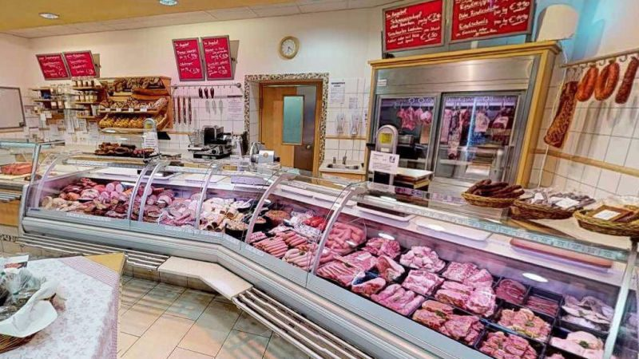
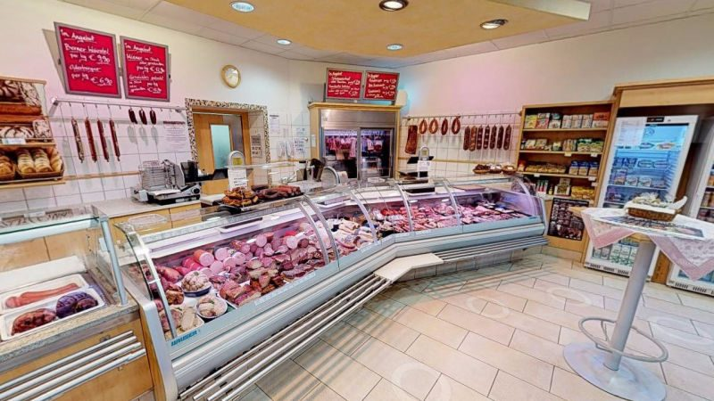

Eigene Produktion
Wurst & Schinken
Sämtliche Schinken und Wurstwaren entstehen im eigenen Betrieb, verfeinert nach traditionellen Familienrezepten – seit vier Generationen.
01 Fleischerei
Alle unsere Schinken und Wurstwaren werden im eigenen Betrieb produziert und anhand traditioneller Familienrezepte verfeinert.

02 Sortiment
Eigene Produktion
Sämtliche Schinken und Wurstwaren entstehen im eigenen Betrieb, verfeinert nach traditionellen Familienrezepten – seit vier Generationen.
Auf Vorbestellung
Gerne bereiten wir für Sie Brötchen, Häppchen und Fingerfood zu. Beeftartar und Roastbeef werden für jeden Anlass frisch zubereitet.
Grillzeit
Verschiedene Rind- und Schweinefleischzuschnitte aus unterschiedlichen Reifungsverfahren – darunter Rindertalgreifung und Dry Aging. Sie werden begeistert sein.
Unser Chef und Fleischermeister Jörg Oberer richtet auf Vorbestellung gerne die verschiedenen Steakzuschnitte – ganz nach Ihrem Wunsch.
03 Öffnungszeiten
| Montag bis Freitag | 7.00 – 15.00 Uhr |
|---|---|
| Samstag | 7.00 – 12.00 Uhr |
| Sonntag | geschlossen |
An Feiertagen und in der Grillsaison können die Zeiten abweichen – ein kurzer Anruf unter +43 3472 2109 schafft Klarheit.

04 Neu: Vorbestellung
Grillpaket, Brötchenplatte, Beeftartar oder ein Gutschein aus dem Haus: Schicken Sie uns Ihren Wunsch, wir bestätigen Menge, Preis und Abholzeit persönlich.